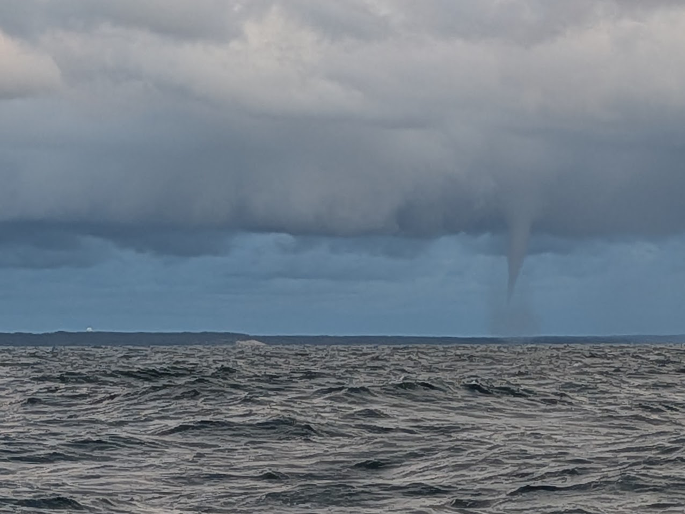

Crossing to Ventspils

After days of preparation we left feeling unprepared anyway. There had been a gale the day before, and gales and heavy seas were forecast for the days after, so we had a one-day weather window. We went to bed at nine, got up at three, and had the warps loosened in Herrvik, on the east coast of Gotland, by half past. Only we were sleepy enough to forget the shore power cable, so we reversed back to the quay, disconnected the cord, coiled it and stowed it aboard.
The forecast was wind straight from behind for the whole journey, with seas of a metre and a bit more. Navigation was simple: a straight ninety degrees, due east, all the way, no sail changes. We unrolled the genoa and made five to six knots, which was perfect, though the genoa was flogging a bit because of the waves.
Fairly soon the bilge alarm went off. I checked, and the entire main bilge, a deep one I have under the engine, was full of water. The boat was rolling heavily, so I was getting queasy below deck trying to trace the leak. There is a secondary bilge pump for the forward bilges, which connect to the deep one but are much shallower. The batteries live there, for instance. If the main bilge overflows, it starts filling these. That pump is operated from down in the cabin, so I started emptying the forward bilges and told my spouse to work the manual pump for the main bilge, which you pump from the cockpit. She got going. I was slightly uneasy. We were taking in water, after all, and we were fairly far out in the Baltic. I was weighing whether we should turn back to shore. If I couldn't stop it or pump it, we would be in trouble.
The leak turned out to be the stuffing box. It has a small cap with fine threads that you fill with thick water-resistant grease and slowly screw down to press the grease into the seal. Somehow the cap had come off. I must have threaded it back badly, as the threads are finicky to get right. In those conditions I found some grease, filled the cap as best I could and screwed it back on. Most of the leak was fixed, for now. The seal has generally worked well so far. But I was wary of starting the engine, since when you motor the shaft is spinning, and obviously leaking more if the seal isn't working properly.
Back up in the cockpit I was feeling properly seasick. My spouse was much worse, completely incapacitated, lying on the cockpit bench trying to find a position she wouldn't be thrown out of. The sea was very confused and thoroughly uncomfortable, the way the Baltic can be. Not high by ocean standards, but extremely steep and short, and now coming from every direction. With the wind behind us there were waves from astern that we surfed, but they came from everywhere else too.
Since the wind was almost dead astern, I had initially chosen not to hoist the main. It would have been tricky to handle, with preventers to rig and accidental gybes to worry about, and the speed was enough without it. But with the horrible waves throwing the boat everywhere, the genoa was mostly flogging, hard and regularly. We were propelled by the bang it made every two seconds or so as it filled with wind, only to collapse immediately and curl behind the furler. It wasn't drawing enough, the wind had also eased, and we were now averaging under three knots. At that rate the crossing would take something like two days instead of one, and another gale was expected the next day.
We needed more speed, and the main would probably help with stability too. I went up to the mast. I hadn't had time to install the jacklines to clip a tether onto; they were waiting neatly in their box. So I avoided going on deck when I could. I started hoisting the main, but before long I noticed the halyard had got stuck on the front side of the mast, behind the steaming light and the spreader. I stood there working on it for a good while with no success. The rolling was difficult and erratic. Eventually I gave up. We were stuck with the genoa. I was feeling even more seasick.
The rolling kept getting worse, naturally, since the farther east we got, the longer the wind had been working on the waves. I kept checking for ships. There was a lot of traffic in the first part of the crossing where the shipping lane runs. Once we had passed it, I felt bad enough that I had to lie down on deck and close my eyes. I set a timer to keep a lookout at short intervals, and especially in case I fell asleep. Closing your eyes enhances the world of the audio. I heard every squeak, every bang of the sail, everything moving inside the boat, the hull being beaten by the waves and complaining after each blow.
I started thinking about motoring instead of the genoa. We had test run the replaced engine at the dock and moved the boat around Herrvik harbour with it, but this would be the first time we were running it for an extended period. We had to change it because the previous one got damaged on the way over to Gotland. And throughout the day I had been trying to empty the main bilge with the manual pump, but something strange was going on. There seemed to be pressure in the pump, yet it felt like nothing was being pumped out. Sometimes the handle got stuck mid-stroke. I didn't know how old the membranes were, so I was a little apprehensive about applying force and breaking them. I hadn't looked into the main bilge since the alarm went off in the morning. Checking it means unscrewing the companionway steps, stowing them somewhere, and then lifting off the big box that encloses the engine. In those conditions, feeling the way I did, I was apprehensive about the whole operation and the danger it involved. So I wasn't sure how much water was left. But the forward bilges act as a margin, so I kept checking those. And the alarm was there in case it rose too high.
I have been watching YouTube videos about airline catastrophes, and learned that aviation has something called the Swiss cheese model. It means, basically, that catastrophic accidents rarely happen because of one mistake or one thing going wrong. They happen when a cascade of them line up at the same time, like stacking slices of Swiss cheese on top of each other until the holes make a channel all the way through.
I was thinking about Swiss cheese. We had not had time for enough shakedown sails before the crossing. The sea was rolling more than was comfortable. My spouse was incapacitated by seasickness, and I was too, though not as badly. We had a leak in the stuffing box. We had no pole for the genoa, no proper setup for running downwind in conditions like this, and though there is a boom brake aboard for taming the gybes, I had never practised with it. We couldn't use the main anyway, because the halyard was stuck. Could the violent flogging break the sail, or the boat? Both are old. If I started the engine, would it hold, since we were halfway now, for about forty-five miles of running, or had something gone wrong in the refit that would only show itself now? Would the stuffing box fail completely? And the manual bilge pump seemed to be pumping nothing, while I didn't know how much water was left down there, since checking meant dismantling half the interior. If the main bilge overflowed, it would start filling the forward bilges, where the batteries live, and flooded batteries would mean no electric pump and no alarm either. Nine hours of motoring ahead of us, and the next gale due tomorrow. Quick back-of-the-envelope calculations on probable consumption said the fuel would be fine, but this was a different engine now, so probable was doing a lot of work there, and I couldn't be entirely sure. I do have a couple of reserve canisters, but the fuel inlet is, unluckily, right at the bow. Try getting there in this sea state, with no jacklines to clip onto, let alone pouring diesel into the actual inlet. Did I mention I had installed a new 300 Ah lithium battery? Still a temporary setup, a separate circuit to power phones, laptops and the Starlink I have for work, but a nice safety feature on crossings. Except I wasn't happy with how I had strapped it in place. That needs improving. What if it came loose and was thrown around in the current washing machine? Lithium batteries don't like blows. A burning lithium battery in a plastic boat is not a very good scenario. My head was getting crowded with worst cases like this, and the seasickness wasn't helping. I was getting into a mentally unsound place. I think for the first time I was asking whether I should be doing this at all. Not because of the problems or the sea state. That is sailing, that is normal. More that I might not be the personality for it. Like Crowhurst, setting out wildly unprepared, slowly going mad. It took him eight months of drifting around the South Atlantic to get where he got. I had managed it in half a day. Maybe I should call it quits.
I started the engine. We motorsailed for a while, but the genoa wasn't contributing anything, so I rolled it in. For the rest of the trip we motored. My spouse was throwing up. The boat was being tossed around violently. By the end we had at times two metres of this steep, confused Baltic sea. If there was a silver lining, it was the boat itself. She is remarkably stable, and this was a proper test of it. Not once did I feel unsafe because of how she handled the sea state. All the worries were about the other things, the technical ones. Towards evening my seasickness began to recede, even as the sea state grew. My spouse only got worse. She was still lying on the cockpit bench. I was wishing the hours away so we could reach the safety of the harbour.
I had of course been following the AIS and keeping a lookout the whole time, and was surprised how little traffic there was once past the shipping lane. Basically nothing. As we approached Latvia we saw occasional traffic and came fairly close to a couple of ships, but only had to alter course once. That was the only time. Ventspils has a fairly large port, although its activity collapsed catastrophically after Russia's "special operation" in 2022. The port had lived largely off Russian transit cargo, and lost most of it. We had not seen a single ship come out of the port during our entire crossing. I had read that you have to be careful getting inside the breakwaters, as there are stray blocks from their construction lying just outside them. The recommendation is that if no ships are entering or exiting, you stay right in the middle.
About ten miles from the harbour I saw clouds forming to the south, parallel to us. We were going east. It looked like rain. I put on foul weather gear and urged my spouse to go lie down in the cabin. She did, and took the bucket with her, putting it to extensive use immediately after reaching the bunk.
I could see a front forming, with lightning. But was it moving towards us? After observing for a while, the clouds clearly kept building. I remember thinking, isn't it a bit odd that we get thunder in the evening, when the weather is cooling down. Soon it was clear it was an arcus, a shelf cloud. These are notorious among sailors, as the thunderstorms they come with bring violent winds that can break a boat. For a moment I considered not going for the harbour. If it caught me before I was docked, it might be safer to stay out at sea and let it pass. I decided to go for it, fully aware I might regret it later.
My mind was racing while the boat moved exactly as fast as it moves. Get to the docks before it hits us. I was quite pessimistic; there was still a long way to go. I looked at the front and saw two tornadoes, or waterspouts. This was not good.
Eventually I saw the breakwaters. The funny thing is that the sea state stays fully on, if anything a bit worse, right up until you get inside them. I was straight in the middle, as instructed, glancing between the arcus on my right and the breakwater. Still, I was happy to be this far. The engine was working and the bilge alarm hadn't gone off again. I tried the cockpit bilge pump once more. Still stuck.
And right as I was about to pass between the breakwaters, of course, it happened. A Stena Line ferry, pointing straight at me on its way out. You have got to be joking. I altered course to enter with the ship on my port side, trying hard to leave enough distance both to the ship and to the breakwater to starboard, so as not to hit the aforementioned rocks. We passed each other literally at the tip of the breakwater while the swell, the waves and the surf tossed me around generously. But we got in.
I still needed to get to the marina, not far anymore, before the arcus reached me. I went full speed and picked an empty pontoon berth, although it looked slightly undersized for our boat. The wind was increasing. The thunder was getting closer. I made the dock, tied two provisional lines to hold her in place, and started figuring out how to make it properly secure. The arcus never came. It passed close by us with somewhat increased winds. I was a wreck of a man, although nothing had actually happened. Living the dream.